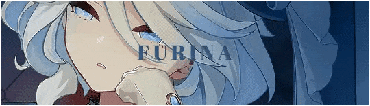

FURINA
FURINA F NYA FADHIL
Furina berasal dari region fountain di dunia teyvat genshin impact

© Hikaru Fadhil - 2024
Your browser does not support the audio element.
download kikir impact
/
Chat hikaru mabar
test web sama seng furina